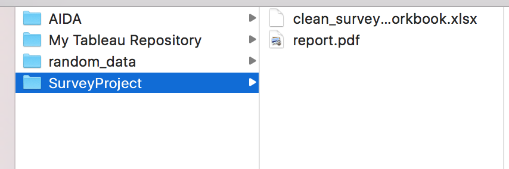
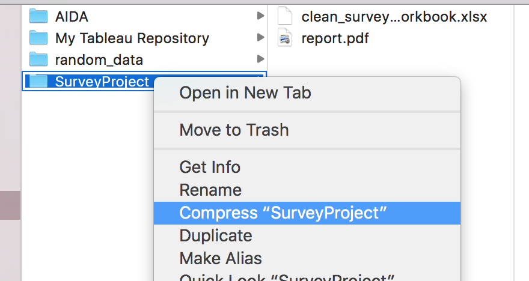

Analyze Survey Data
For the final project, you will conduct your own data analysis and create a file to share that documents your findings. Go through the data analysis process, starting by posing a question and finishing by sharing your findings.
Evaluation
Use the Project Rubric to review your project. If you are happy with your submission, then you are ready to submit! If you see room for improvement in any category in which you do not meet specifications, keep working!
Your project will be evaluated by a Udacity reviewer according to the same Project Rubric. Your project must "meet specifications" or "exceed specifications" in each category in order for your submission to pass.
Submission
What to include in your submission
A slide show presentation. This file should include:
- A statement of the question(s) you posed
- Documentation of any data cleaning you did via an Excel workbook
- Summary statistics and plots communicating your final results
- Use our template to assist
A list of Web sites, books, forums, blog posts, etc. that you referred to or used in creating your submission (add N/A if you did not use any such resources).
In order to review your presentation, you will need to save your slides as aPDF. You can do this from within Google Slides by selecting File > Download as > PDF Document.You can also download the .xlsx format of your workbook if you are using Google Sheets by selecting File > Download as > Microsoft Excel (.xlsx).
**In order to review your presentation, you will need to save your slides as a PDF and your workbook as xlsx.
You should have a workbook with the data and visualizations used for each slide in your presentation.
Save the presentation as a PDF and the workbook.
Zip (compress) the folder and submit this zipped folder with both files in it.
Submit the zipped file.
Ready to submit your project?
Click on the "Submit Project" button and follow the instructions to submit!
It can take us up to a week to grade the project, but in most cases it is much faster. You will get an email when your submission has been reviewed.
Project Submission Checklist
Before submitting your project, please review and confirm the following items.
I am confident all rubric items have been met and my project will pass as submitted.
Project builds correctly without errors and runs.
All required functionality exists and my project behaves as expected per the project's specifications.
Once you have checked all these items, you are ready to submit!